■2026-10-24 (土) ウディタのスマホ･ブラウザポータル『ゲームアソビタ』紹介！▼
『ゲームアソビタ』公開から2週間が経過しました！
おかげさまでたくさんの作品のご投稿、誠にありがとうございます！ サポートで真っ当なご意見がボンボコ飛んできて慌てて対応してたり、ブラウザウディタ上で起きるウディタ本体側のバグを直したり、それ以外でもドタバタしていたりと必死でした。
今回は「この記事だけ見ればゲームアソビタのすべてが分かる！」というまとめ内容でお送りします！
実際にページを覗いてみたい方はこちら！ ↓
ウディタ作品ポータル『ゲームアソビタ』へ
なんせ最新版のウディタなら、ゲームデータ作成時に『まるごと暗号化（Data.wolfのみ）』して『ブラウザで動作する』オプションをオンにして作った【Data.wolf】ゲームデータをアップするだけでもう最低限は動きます！
↓『片道勇者』の紹介ページ ＆ スマホアプリとしてのダウンロード！
特に一番大きいのがこの【スマホアプリとしてのダウンロード機能】でしょう！
あの『巡り廻る。』や私の『片道勇者』もスマホアプリとして保存できます！ オフラインでも機内モードでもプレイ可能！
お出かけ前にダウンロードしておけば、あなたのスマホが小さな無料ゲーム機になります！
↓『片道勇者』をスマホでプレイ！
ボタンは決定・キャンセル・サブキー（Shift）、右クリック切り替えボタンと十字キーからなります。斜め移動はゲーム機よりしやすいですね！
みたいな感じで、『ゲームアソビタ』はウディタ作品がもっと遊ばれやすくなることを目標としたサイトです！
少なくともスマホで遊べるようにできるのはウディタリアンのみなさまにとって便利なはずなので、その面では確実にお役に立てると思います！
【投稿用Data.wolfの作り方】
投稿用の【Data.wolf】の作り方ですが、ウディタ側の『ゲームデータ作成』時に以下のオプションを入れてください！
・暗号化設定→『Dataフォルダ丸ごと暗号化（Data.wolfのみ）』
・【ブラウザウディタ】での動作を許可する
具体的には下の図をご参照あれ！ このゲームデータ作成処理で作られたフォルダ内に「Data.wolf」が入っています！ それをアソビタにアップロードするわけですね。
【フォントのアップロードは？】
フォントを同梱したい場合、つい最近まで「補助ファイル」というFontList.iniなどの謎のファイルの作成が必要でした！
が、2026-10-20に修正して大幅にシンプル化しました！
今はフォントの個別ファイルをアップロードするとフォント名が出るので、それを「ゲーム設定」のフォントに書き込めばおそらく期待通りに動作するようになっています。分かりやすさアップ！
※当然ですが、アップロードするフォントは、二次配布が許可されているものをご利用ください。一部の再配布禁止のフォントのアップロードはサイト側でも禁止しています。
ただし内容が頻繁に更新されて、常に最新版で遊んでもらいたい『ライブ型ゲーム』には向かないので、そういう場合は『スマホへのダウンロード機能』を切っておいてくださった方がいいと思います！
「ネタバレ」コメントやバグ報告・レビューを送る機能もあります！ ネタバレありコメントはクリックするまで見えなくなったり、上部にピックアップされなくなります。
ただしAIに毎回チェックさせてると私の金銭負担が重いので、編集には1時間ごとの回数制限があります。
その代わりに、自作品一覧ページ上からできる「ゲームファイルのみ更新（Data.wolfの差し替え）」のみ、ほぼ無制限にできるようになっています。動作テストでめっちゃ何度もアップすると思いますので、ゲームデータは遠慮なく差し替えてください！
※アップしたてなら「保護期間」があり、その後は「プレイ数」や「データサイズ」に応じてゲージが減ったり増えたりします。
●冬眠
作品があまり遊ばれない状態が続くと「冬眠」モードになり、ゲームのプレイができなくなります。
「復帰投票」が集まったり、作者さまが「復帰」ボタンを押すと一定期間復帰します。
●アーカイブ化
「冬眠」になってからさらに時間が経過すると、ゲームデータも削除され、アーカイブ化状態になります。
作者さまが「Data.wolf」をアップし直すと、再びプレイ可能状態になります。
●Data.wolfが200MB以内の作品のみ投稿できます。
●プロ版機能は動作しません。ゲーム画面の自由サイズも使用できないのでご注意を。
●フォントをアップロードしない場合、自動的に別フォントへ置き換えられるので見た目が変わる場合があります。自分で追加のフォントをアップロードすることが可能です。
●性的表現（局部が見えてる、具体的な性行為を含む）、過度なグロ描写（内臓見えてるなどの過激描写。出血程度は可）を含む作品は投稿できません。
●実在の人物や団体をおとしめる、あるいは攻撃する内容は投稿できません。
●法令違反とか権利侵害、差別や誹謗中傷を含む作品は投稿できません。
またすでに言いましたが、ブラウザで遊んでスマホアプリ（風）にダウンロードできます！ お持ち帰りしておくと「冬眠」になった後も遊べるので安心！
ランキングを見れば、勢いがあるゲームだけでなく、コメントが盛んなゲームやひたすらプレイ数が多いゲームを探せます！
なお作品一覧からは「好きなジャンル」「プレイ時間」「サイズ」のゲームをしぼって検索できるようにしていますので必要ならご利用を！
これは投票みたいな感じで、『一番多いリアクション』が作品紹介トップに表示されます！ 「面白い！」か「好き！」なのか、あるいは「！？」なのか、どう思われやすい作品なのか分かりますね！
こちらは、ゲームアソビタをより濃厚に使いたいプレイヤーさん向けの機能です！
最終更新日や、その作者さまの最新作品が一覧できます。更新順と登録順に切り替えも可能！
ゲームを遊ぶ（+50/1日1回）／コメントする（+30/1日1回）／自作品がコメントをもらう（+20/1日10回・1作品に1人1回）／レビューに「参考になった」をもらう（+10/1日20回）
なお、レベルアップごとに「最大フォロー数」が増えたり、「🎫 作品宣伝チケット」と「⛵ 復帰投票チケット」を1枚ずつ獲得できます（各最大5枚まで所有可）。
●「🎫 作品宣伝チケット」は特定の作品をトップページに載りやすくすることができます！ 応援されている作品には「応援中！」マークが付きます。みなさんももっと使っていいんですよ！
●「⛵ 復帰投票チケット」は冬眠中の作品の復帰を後押しできます。一定数集まると復活し、トップページで「おかえり！」コーナーに表示されます。ひっそり復活してひっそり冬眠しなおすんじゃなくて、ちょっとした目立ちチャンスがありますよ！
この自動審査によって、私があんまりお世話できなくても荒れすぎないようにはできるので、言語AIって助かりますね！
いちおう、作者さまはコメント削除する権限を持っているので、必要なら自主的にコメント削除を行ってください。
新しい作品はやっぱり大きく紹介してあげたいですよね！
こちらは並びが固定化されそうだったので、「初期スクロール位置をランダム」にして最初に目に入る作品が毎回変わるようにしています。
20本くらい紹介されます！
いま目立っていなくても日々交代で掘り出してご紹介します！ 知らなかった面白い作品があるかも！？
トップページの上部にも紹介されるので、誰かが遊びたいと思っている作品に気付きやすくなります！
レジェンド枠！ でも残りっぱなしだと変化がなさすぎるので、このあたりの下めの場所にあります！
新着一覧を見たあとそのままここが目に入ることが多いと思います。
RPG以外のジャンルの作品もなぜかいっぱいあるのはウディタ（※WOLF RPGエディター）の強みですね！
ついでにいうと、こういう形にしておいたら他のブラウザゲームやHTMLファイルを勝手にアップされたりもされないので安全です！
ブラウザゲームサイトは、他のツール製のブラウザゲーム用データもアップできてしまいがちな苦しみがあるので、単一ツール製の作品だけに限定するのって実は大変なんですよね。セキュリティ的にも怪しい処理が混ぜられたら困る！
でもアソビタはセキュリティ上のリスクをかなり絞れます！ 管理者の私も安心！
これもData.wolf一個で動かせるブラウザウディタのおかげです、すばらしい！ ありがとうございます！
作者さまがいらっしゃったらワンボタンで復帰できるようにしてありますが、維持する興味も失っておられた場合は静かに「冬眠」状態になります！
つまり、「作者さま」か「プレイヤーの皆さま」からのいずれか誰かに見られている限りは起き続けるけど、そうでなければおやすみしてもらってサーバーの助けにさせていただきます、という形式ですね！
かなり大胆な仕様ですが、後からいきなり「勝手に古いゲーム消しまーす」ということになると問題ですからね！
アソビタでは最初から、徐々に「冬眠」処理が進んでいくことをゲームルールそのものに組み込むことにしました。
まだ開始二週間なので、この仕組みを取り入れる場合とそうでない場合でどのくらいの差が出るかは未知数です！ 作者さまがどのくらいの維持意欲があるか次第になりそうですね。
とはいえ、システムのベースさえあれば、あとから「冬眠になるまでの日数」などのパラメータを調整することで状況に合わせた負荷対応が可能になるので、この仕組み自体は入れておく価値があったと思っています。役に立つのはこれから！
が、そのAI審査、初日と2日目は、こんな指摘によってゲーム紹介文がイエロー（警告状態、トップページに表示されない）になってしまうケースがありました。
↓
🤖GPT AI審査員「『失敗すると悲惨な目に遭う』という煽情的表現があり、プレイヤーの行動に対する脅し的ニュアンスが含まれています。表現を落ち着かせ、過度な脅しを避ける説明文へ修正してください。
🐺私「いやホラーっぽいゲームの紹介文なんだから悲惨な目に遭うくらいいいでしょ！！！」
ひどい！ ゲームのアピール文としてはあまりに基準が厳しすぎたので開始2日目にして慌ててゆるめに調整し直しましたが、こういったセーフとアウトの基準を決めるのも、これから苦労しそうなポイントです。
他にも『死んで転生』とかの設定にも敏感に反応したりして苦労しておりました！
チャット上での相談でそんな内容が出たら『待って！ ダメ！ ちゃんと指定施設に相談して！』みたいに答えて危険判定してしまう内容かもしれないので、ちゃんと『創作上の話だよ』ってのは強めに言っておかないといけませんね。
サイトトップページの下に「サーバー運営負担」ゲージを置きました！
色んな指標にしたがって、ザツに金銭負担を数値化して表示する仕組みです。
『これが100％より低いなら全然耐えられます』という数値なので、そうなるまでは全然気にされなくて大丈夫です！
あんまり負担が増えすぎるようでしたら遠慮なく「冬眠」になりはじめる日数などを調整し始めますのでその点ご容赦くださいね！ という表明のためのゲージですね！
最初のあたりはものすごいいっぱい調整しなきゃいけなくてギャー！って言ってましたが、二週間も経ってようやく少しは落ち着いてきたかもしれません。
でも代わりにウディタ本体のバグでドタバタしている気がします。
ウディタもアソビタも早く落ち着いて欲しいー！！
という感じで、これまでスマホ周りが弱すぎたウディタですが、色んな助けもあってウディタ公開18年後にしてようやくこういうサービスを実現することができました！
特に『ブラウザウディタ』本体を開発してくださったrukaさまがいらっしゃらなかったら絶対無理な案件でした！
ひとまず現状でも、あの伝説の『巡り廻る。』や、私の『片道勇者』、スマホで気軽に遊べて楽しい『土を掘れ！』などがスマホで動かせますよー！
「スマホに（アプリ）保存」してそちらで遊ぶようにすれば、アソビタ上で「冬眠」したあとでも続けて遊べますので、欲しい方はお早めに！
ウディタ作品ポータル『ゲームアソビタ』へ
すでにたくさんの作品をご投稿くださっている皆さまも、遊んでくださっている皆さまも、本当にありがとうございます！
今後とも、よければゲームアソビタをうまくご活用いただけましたら幸いです。
しかしこれだけ遊ぶのが手軽だと、私もアソビタ用のゲームを作りたくなってしまいますね。
知り合いの方もそうおっしゃっていたので、アソビタ自体もいい感じに創作意欲をかきたてられる助けになっていればうれしいです！
おかげさまでたくさんの作品のご投稿、誠にありがとうございます！ サポートで真っ当なご意見がボンボコ飛んできて慌てて対応してたり、ブラウザウディタ上で起きるウディタ本体側のバグを直したり、それ以外でもドタバタしていたりと必死でした。
今回は「この記事だけ見ればゲームアソビタのすべてが分かる！」というまとめ内容でお送りします！
実際にページを覗いてみたい方はこちら！ ↓
ウディタ作品ポータル『ゲームアソビタ』へ
◆ウディタ作品ポータル『ゲームアソビタ』とは！
【一番の強み：ウディタ作品が手軽にスマホ・ブラウザ配信できる！】
『ゲームアソビタ』はウディタ作品を気軽にスマホアプリ・ブラウザゲーム化できるページです！なんせ最新版のウディタなら、ゲームデータ作成時に『まるごと暗号化（Data.wolfのみ）』して『ブラウザで動作する』オプションをオンにして作った【Data.wolf】ゲームデータをアップするだけでもう最低限は動きます！
↓『片道勇者』の紹介ページ ＆ スマホアプリとしてのダウンロード！
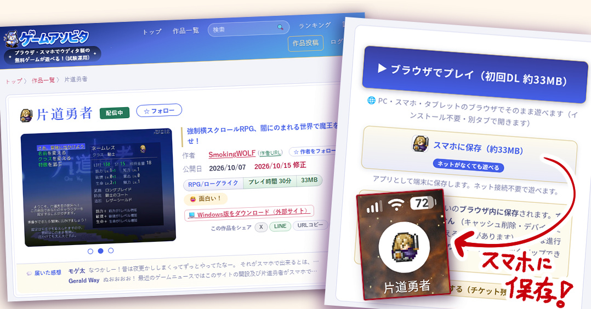
特に一番大きいのがこの【スマホアプリとしてのダウンロード機能】でしょう！
あの『巡り廻る。』や私の『片道勇者』もスマホアプリとして保存できます！ オフラインでも機内モードでもプレイ可能！
お出かけ前にダウンロードしておけば、あなたのスマホが小さな無料ゲーム機になります！
↓『片道勇者』をスマホでプレイ！
ボタンは決定・キャンセル・サブキー（Shift）、右クリック切り替えボタンと十字キーからなります。斜め移動はゲーム機よりしやすいですね！
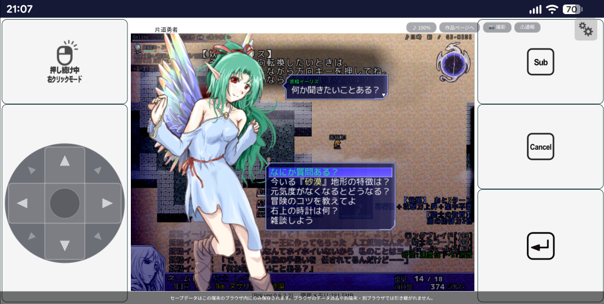
みたいな感じで、『ゲームアソビタ』はウディタ作品がもっと遊ばれやすくなることを目標としたサイトです！
少なくともスマホで遊べるようにできるのはウディタリアンのみなさまにとって便利なはずなので、その面では確実にお役に立てると思います！
【ゲーム作者の人は何ができる？】
ウディタでゲーム開発してくださってるみなさまは何ができるのかをご紹介！●Data.wolfをアップするだけで作品投稿できる！（200 MB以内）
作品投稿は簡単！ 新規作品投稿ページ（ログインが必要！）にて、タイトルや紹介文などを記入して、【Data.wolf】を用意してアップロードし、「投稿」するだけ！【投稿用Data.wolfの作り方】
投稿用の【Data.wolf】の作り方ですが、ウディタ側の『ゲームデータ作成』時に以下のオプションを入れてください！
・暗号化設定→『Dataフォルダ丸ごと暗号化（Data.wolfのみ）』
・【ブラウザウディタ】での動作を許可する
具体的には下の図をご参照あれ！ このゲームデータ作成処理で作られたフォルダ内に「Data.wolf」が入っています！ それをアソビタにアップロードするわけですね。
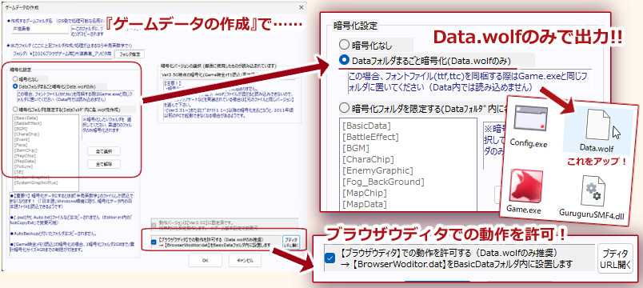
【フォントのアップロードは？】
フォントを同梱したい場合、つい最近まで「補助ファイル」というFontList.iniなどの謎のファイルの作成が必要でした！
が、2026-10-20に修正して大幅にシンプル化しました！
今はフォントの個別ファイルをアップロードするとフォント名が出るので、それを「ゲーム設定」のフォントに書き込めばおそらく期待通りに動作するようになっています。分かりやすさアップ！
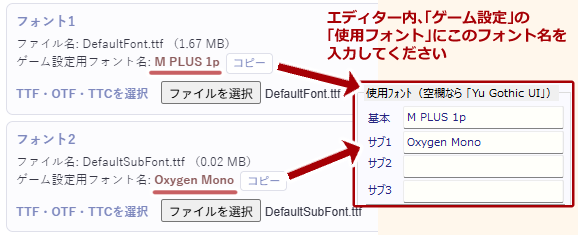
※当然ですが、アップロードするフォントは、二次配布が許可されているものをご利用ください。一部の再配布禁止のフォントのアップロードはサイト側でも禁止しています。
●スマホアプリ化！（任意）
ゲーム登録ページでは、スマホアプリ化（ダウンロード可能にするか）のチェックボックスがあります！ これをオンにしておくとゲーム紹介ページに「スマホにダウンロード」ボタンが出てきます！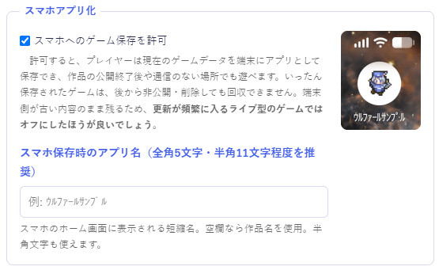
ただし内容が頻繁に更新されて、常に最新版で遊んでもらいたい『ライブ型ゲーム』には向かないので、そういう場合は『スマホへのダウンロード機能』を切っておいてくださった方がいいと思います！
●感想・バグ報告・レビュー受付！（任意）
ゲーム登録ページでオンにしておけば、感想･バグ報告・レビュー受付をそれぞれ個別にオンオフできます！ 感想は欲しいけどバグ報告いらないなあ、という人も安心！（その場合、感想欄にバグ報告が来ても知りませんけど！ ただ作者さんはコメント削除できるので、困る内容のものは消してあげてください）「ネタバレ」コメントやバグ報告・レビューを送る機能もあります！ ネタバレありコメントはクリックするまで見えなくなったり、上部にピックアップされなくなります。
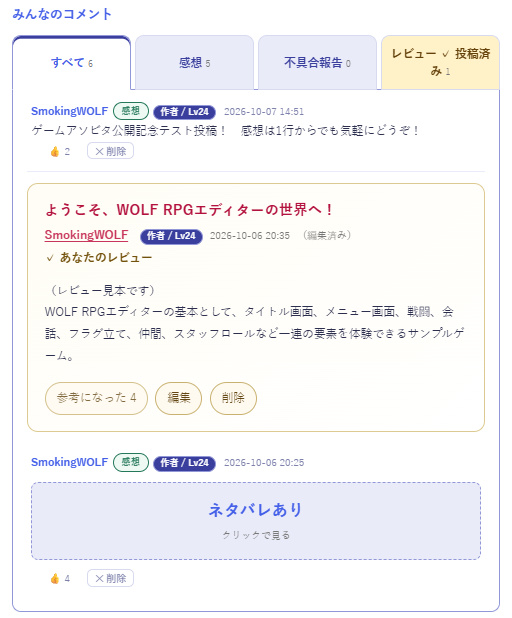
●作者向けの自作品管理機能
管理ページ！ シンプルです！ 詳細内容を変更するボタンと、自作品ページを開くボタンと、Data.wolfだけ差し替えする部分が付いてるだけ！ただしAIに毎回チェックさせてると私の金銭負担が重いので、編集には1時間ごとの回数制限があります。
その代わりに、自作品一覧ページ上からできる「ゲームファイルのみ更新（Data.wolfの差し替え）」のみ、ほぼ無制限にできるようになっています。動作テストでめっちゃ何度もアップすると思いますので、ゲームデータは遠慮なく差し替えてください！
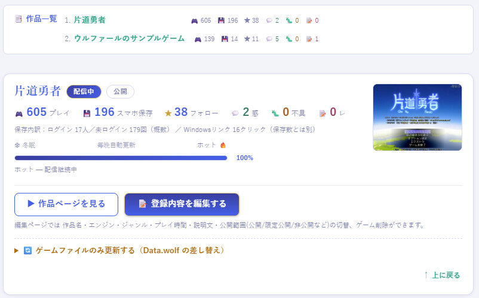
●冬眠・アーカイブ化
これは「できること」とは違いますが、自作品一覧ページには冬眠までの残りゲージが表示されています！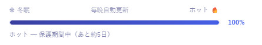
※アップしたてなら「保護期間」があり、その後は「プレイ数」や「データサイズ」に応じてゲージが減ったり増えたりします。
●冬眠
作品があまり遊ばれない状態が続くと「冬眠」モードになり、ゲームのプレイができなくなります。
「復帰投票」が集まったり、作者さまが「復帰」ボタンを押すと一定期間復帰します。
●アーカイブ化
「冬眠」になってからさらに時間が経過すると、ゲームデータも削除され、アーカイブ化状態になります。
作者さまが「Data.wolf」をアップし直すと、再びプレイ可能状態になります。
●投稿できる作品は？
なお投稿可能な作品の条件は以下の通りです！●Data.wolfが200MB以内の作品のみ投稿できます。
●プロ版機能は動作しません。ゲーム画面の自由サイズも使用できないのでご注意を。
●フォントをアップロードしない場合、自動的に別フォントへ置き換えられるので見た目が変わる場合があります。自分で追加のフォントをアップロードすることが可能です。
●性的表現（局部が見えてる、具体的な性行為を含む）、過度なグロ描写（内臓見えてるなどの過激描写。出血程度は可）を含む作品は投稿できません。
●実在の人物や団体をおとしめる、あるいは攻撃する内容は投稿できません。
●法令違反とか権利侵害、差別や誹謗中傷を含む作品は投稿できません。
【プレイヤー側の人ができること（ログインなし編）】
ここからはプレイヤーの人ができること編！ ログインなしでも基本部分は楽しめます！●ブラウザでゲームを遊ぶ！ スマホアプリとしてDLする！
ブラウザでゲームを遊ぶのはログインなしでも可能です！またすでに言いましたが、ブラウザで遊んでスマホアプリ（風）にダウンロードできます！ お持ち帰りしておくと「冬眠」になった後も遊べるので安心！
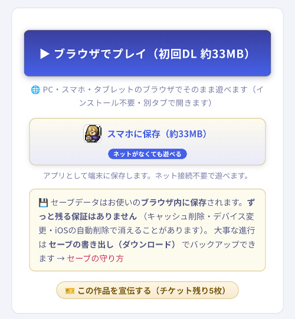
●トップページやランキングで作品を見る！ 検索する！
トップページには色んな観点で選んだピックアップ作品をご紹介！ランキングを見れば、勢いがあるゲームだけでなく、コメントが盛んなゲームやひたすらプレイ数が多いゲームを探せます！
なお作品一覧からは「好きなジャンル」「プレイ時間」「サイズ」のゲームをしぼって検索できるようにしていますので必要ならご利用を！
●作品詳細でリアクションアイコンを押す！
各作品詳細ページでは、ログインされていないかたでも「リアクションボタン」を押すことができます！これは投票みたいな感じで、『一番多いリアクション』が作品紹介トップに表示されます！ 「面白い！」か「好き！」なのか、あるいは「！？」なのか、どう思われやすい作品なのか分かりますね！
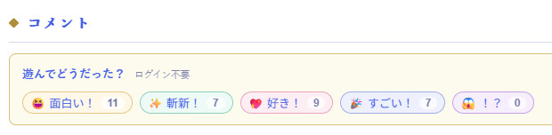
【プレイヤー側の人ができること（ログイン済み編）】
プレイヤーの方でも、ログインすると色んな機能が使えます。Googleアカウントを持っていればすぐログイン可能！こちらは、ゲームアソビタをより濃厚に使いたいプレイヤーさん向けの機能です！
●作品・作者フォロー（ログインが必要）
継続して追いたい更新作品や、次回作が気になる作者さまがいらっしゃるときに便利なフォロー機能があります！最終更新日や、その作者さまの最新作品が一覧できます。更新順と登録順に切り替えも可能！
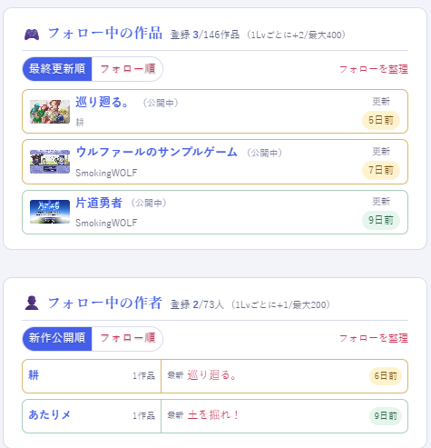
●経験値アップ機能（ログインが必要）
日々の活動でレベルアップできます！ EXPが100たまるとレベルアップ！ 経験値のため方は今のところ以下の通りです。ゲームを遊ぶ（+50/1日1回）／コメントする（+30/1日1回）／自作品がコメントをもらう（+20/1日10回・1作品に1人1回）／レビューに「参考になった」をもらう（+10/1日20回）
なお、レベルアップごとに「最大フォロー数」が増えたり、「🎫 作品宣伝チケット」と「⛵ 復帰投票チケット」を1枚ずつ獲得できます（各最大5枚まで所有可）。
●「🎫 作品宣伝チケット」は特定の作品をトップページに載りやすくすることができます！ 応援されている作品には「応援中！」マークが付きます。みなさんももっと使っていいんですよ！
●「⛵ 復帰投票チケット」は冬眠中の作品の復帰を後押しできます。一定数集まると復活し、トップページで「おかえり！」コーナーに表示されます。ひっそり復活してひっそり冬眠しなおすんじゃなくて、ちょっとした目立ちチャンスがありますよ！
●コメント（ログインが必要）
ログインしている人なら、各作品詳細ページにて『感想・不具合報告・レビュー』を書くことができます！ とげとげしい表現だとAIがやわらかい表現に直してから掲載されることがありますが、今のところ一度も発動していません。この自動審査によって、私があんまりお世話できなくても荒れすぎないようにはできるので、言語AIって助かりますね！
いちおう、作者さまはコメント削除する権限を持っているので、必要なら自主的にコメント削除を行ってください。
【トップページで色々紹介！】
トップページには色んな方向性で作品が掲載されています！ 上から順にコーナーをご紹介！●話題の新作
話題の新作は公開1ヶ月以内でよく遊ばれている作品！新しい作品はやっぱり大きく紹介してあげたいですよね！
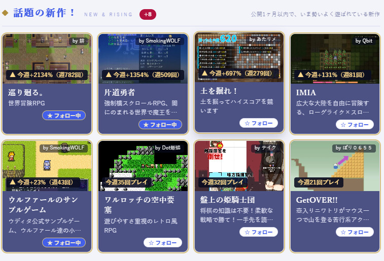
●人気上昇作品！
人気上昇作品は、公開後の期間にかかわらずいま勢いのある作品群！こちらは並びが固定化されそうだったので、「初期スクロール位置をランダム」にして最初に目に入る作品が毎回変わるようにしています。
20本くらい紹介されます！
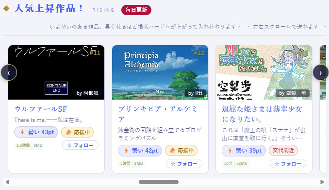
●今日の一本！
日替わりで埋もれた作品を4つずつピックアップ！いま目立っていなくても日々交代で掘り出してご紹介します！ 知らなかった面白い作品があるかも！？
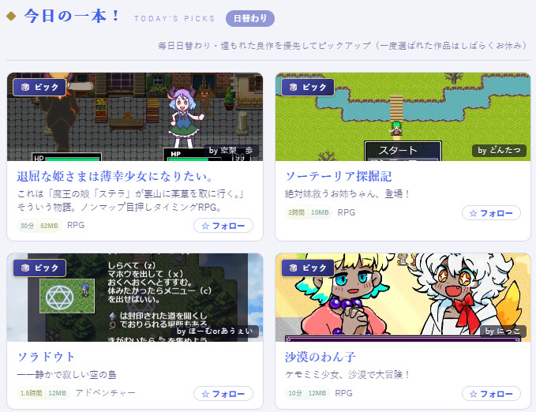
●復帰作品！ おかえり！
復帰チケットで冬眠から目覚めた作品が並びます！トップページの上部にも紹介されるので、誰かが遊びたいと思っている作品に気付きやすくなります！
●定番作品！
一ヶ月以上が経過した、「総プレイ数が多い作品」は「定番作品」として表示されます！レジェンド枠！ でも残りっぱなしだと変化がなさすぎるので、このあたりの下めの場所にあります！
●新着作品！
新着作品も並んでいます！ 24時間以内の新作があれば、トップページの上部に「今日の新着」として本数が表示されるので、毎回下までスクロールしなくても新着作品を見逃すことはありません。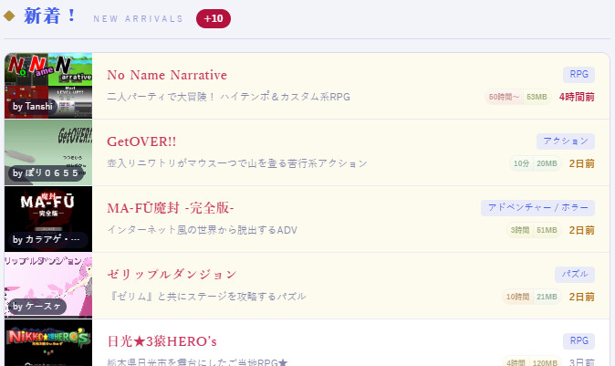
●新着コメント・レビュー作品！
新しくコメントが付いた作品やレビューが付いた作品が紹介されています！新着一覧を見たあとそのままここが目に入ることが多いと思います。
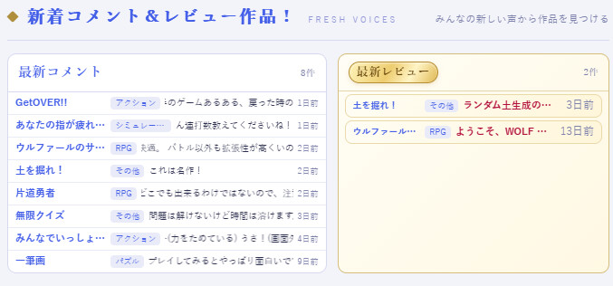
●すべての作品から見つける！
どれにもピンと来なかった人はここでジャンルやプレイ時間を選んで作品チェック！RPG以外のジャンルの作品もなぜかいっぱいあるのはウディタ（※WOLF RPGエディター）の強みですね！
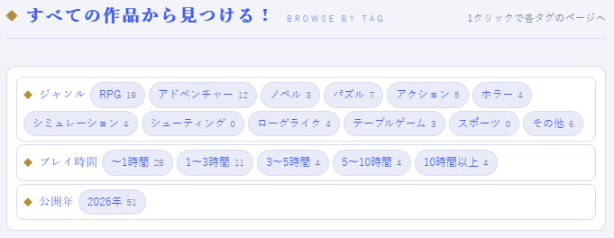
【サイトのこだわりポイント】
ここではこだわりポイントを2点ピックアップ！●ゲーム投稿がだいぶ楽！
アソビタは「Data.wolf」をアップするだけでブラウザプレイ可能＆スマホダウンロード可能にできるので、変換する手間がかなり楽です！ついでにいうと、こういう形にしておいたら他のブラウザゲームやHTMLファイルを勝手にアップされたりもされないので安全です！
ブラウザゲームサイトは、他のツール製のブラウザゲーム用データもアップできてしまいがちな苦しみがあるので、単一ツール製の作品だけに限定するのって実は大変なんですよね。セキュリティ的にも怪しい処理が混ぜられたら困る！
でもアソビタはセキュリティ上のリスクをかなり絞れます！ 管理者の私も安心！
これもData.wolf一個で動かせるブラウザウディタのおかげです、すばらしい！ ありがとうございます！
●冬眠とアーカイブ化で維持可能性を最優先にした低コスト運営！
すでに説明済みですが、ゲームアソビタではプレイ数が少ない作品は「冬眠」します！作者さまがいらっしゃったらワンボタンで復帰できるようにしてありますが、維持する興味も失っておられた場合は静かに「冬眠」状態になります！
つまり、「作者さま」か「プレイヤーの皆さま」からのいずれか誰かに見られている限りは起き続けるけど、そうでなければおやすみしてもらってサーバーの助けにさせていただきます、という形式ですね！
かなり大胆な仕様ですが、後からいきなり「勝手に古いゲーム消しまーす」ということになると問題ですからね！
アソビタでは最初から、徐々に「冬眠」処理が進んでいくことをゲームルールそのものに組み込むことにしました。
まだ開始二週間なので、この仕組みを取り入れる場合とそうでない場合でどのくらいの差が出るかは未知数です！ 作者さまがどのくらいの維持意欲があるか次第になりそうですね。
とはいえ、システムのベースさえあれば、あとから「冬眠になるまでの日数」などのパラメータを調整することで状況に合わせた負荷対応が可能になるので、この仕組み自体は入れておく価値があったと思っています。役に立つのはこれから！
【余談】
●AIに審査させてますけど調教が大変！
ゲームが投稿されたら[紹介文]や[画像]をAI審査して、どこを直せばいいかを教えてくれるシステムを入れています！が、そのAI審査、初日と2日目は、こんな指摘によってゲーム紹介文がイエロー（警告状態、トップページに表示されない）になってしまうケースがありました。
↓
🤖GPT AI審査員「『失敗すると悲惨な目に遭う』という煽情的表現があり、プレイヤーの行動に対する脅し的ニュアンスが含まれています。表現を落ち着かせ、過度な脅しを避ける説明文へ修正してください。
🐺私「いやホラーっぽいゲームの紹介文なんだから悲惨な目に遭うくらいいいでしょ！！！」
ひどい！ ゲームのアピール文としてはあまりに基準が厳しすぎたので開始2日目にして慌ててゆるめに調整し直しましたが、こういったセーフとアウトの基準を決めるのも、これから苦労しそうなポイントです。
他にも『死んで転生』とかの設定にも敏感に反応したりして苦労しておりました！
チャット上での相談でそんな内容が出たら『待って！ ダメ！ ちゃんと指定施設に相談して！』みたいに答えて危険判定してしまう内容かもしれないので、ちゃんと『創作上の話だよ』ってのは強めに言っておかないといけませんね。
●下に負担ゲージも入れた！
なかなか見ない仕組み、第二号！サイトトップページの下に「サーバー運営負担」ゲージを置きました！
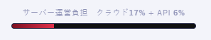
色んな指標にしたがって、ザツに金銭負担を数値化して表示する仕組みです。
『これが100％より低いなら全然耐えられます』という数値なので、そうなるまでは全然気にされなくて大丈夫です！
あんまり負担が増えすぎるようでしたら遠慮なく「冬眠」になりはじめる日数などを調整し始めますのでその点ご容赦くださいね！ という表明のためのゲージですね！
●これからの予定、ぼちぼち小さく運営！
という感じでこんなゲームアソビタですが、これからできる限り低頻度にお世話しつつ、自動でいい感じに回っていくように調整していきたいと思っております！最初のあたりはものすごいいっぱい調整しなきゃいけなくてギャー！って言ってましたが、二週間も経ってようやく少しは落ち着いてきたかもしれません。
でも代わりにウディタ本体のバグでドタバタしている気がします。
ウディタもアソビタも早く落ち着いて欲しいー！！
という感じで、これまでスマホ周りが弱すぎたウディタですが、色んな助けもあってウディタ公開18年後にしてようやくこういうサービスを実現することができました！
特に『ブラウザウディタ』本体を開発してくださったrukaさまがいらっしゃらなかったら絶対無理な案件でした！
ひとまず現状でも、あの伝説の『巡り廻る。』や、私の『片道勇者』、スマホで気軽に遊べて楽しい『土を掘れ！』などがスマホで動かせますよー！
「スマホに（アプリ）保存」してそちらで遊ぶようにすれば、アソビタ上で「冬眠」したあとでも続けて遊べますので、欲しい方はお早めに！
ウディタ作品ポータル『ゲームアソビタ』へ
すでにたくさんの作品をご投稿くださっている皆さまも、遊んでくださっている皆さまも、本当にありがとうございます！
今後とも、よければゲームアソビタをうまくご活用いただけましたら幸いです。
しかしこれだけ遊ぶのが手軽だと、私もアソビタ用のゲームを作りたくなってしまいますね。
知り合いの方もそうおっしゃっていたので、アソビタ自体もいい感じに創作意欲をかきたてられる助けになっていればうれしいです！
2026-10-24 (土)  カテゴリ: ウディタ
カテゴリ: ウディタ
 カテゴリ: ウディタ
カテゴリ: ウディタ